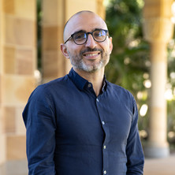
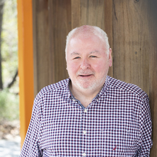

Invited Participants
Speakers and Discussants



Digital public infrastructure now carries the weight of welfare payments, health records, and identity for hundreds of millions of citizens across Australia and India. Yet the governance conversation remains anchored in a twentieth-century idea: that security means keeping intruders out. This keynote argues for a different starting point, where breaches are treated as inevitable and governance is judged by how well systems absorb, contain, and recover from them without harming the people who depend on them for welfare and healthcare. Drawing on Australia's digital identity and health record systems and India's Aadhaar–UPI–ABDM stack, the talk examines what “inclusive, efficient and secure” actually requires in practice — data minimalism, structural decentralisation, and consequence absorption, not perimeter defence alone. It closes with a shared governance agenda both countries can test against each other's experience.